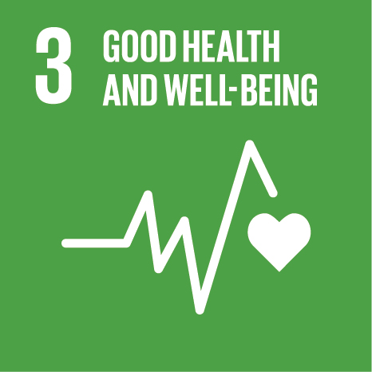

Jogo
Jogo da bandeira
Fonte: Online Scout Manager ↗ · © Online Youth Manager Ltd
Lobitos (6-10)
Em resumo
Duas equipas defendem a sua bandeira e tentam capturar a do adversário, sem serem apanhadas. Exige estratégia, divisão de papéis e entreajuda, porque os apanhados podem ser libertados por um colega.
Materiais
Duas bandeiras ou lenços, cones para marcar o campo.
Como se faz
Preparação
Marcar o campo (cerca de 30 x 20 m) com cones e uma linha central. Colocar uma bandeira a 5 m do fundo de cada lado e marcar uma "prisão" junto a cada bandeira. Dividir em duas equipas equilibradas e explicar as regras.
Desenvolvimento
- Cada equipa fica no seu lado, com a bandeira atrás.
- Ao sinal, tentam atravessar a linha central, tocar na bandeira adversária e voltar ao seu lado sem serem tocados.
- Quem for tocado no campo adversário vai para a prisão; um colega pode libertá-lo com um toque.
- Quem leva a bandeira para o seu lado sem ser tocado ganha o ponto.
- Jogar 2 a 3 rondas de 10 minutos, trocando de lado e de estratégia.
Fecho e debriefing
Sentar em roda 5 minutos: que estratégia usámos? Quem teve funções específicas? Como nos sentimos quando fomos apanhados? Como incluímos quem corria menos?
Segurança
Médio
O que pode correr mal
Corridas e apanhadas com risco de colisões, quedas e puxões.
Como reduzir
Campo delimitado e livre de buracos e pedras; só se apanha com um toque leve (nunca agarrar); calçado fechado; zona neutra a meio; equipas equilibradas por idade e tamanho.
Baixo
O que pode correr mal
Quem é apanhado primeiro pode sentir-se excluído; pode haver tensão entre equipas.
Como reduzir
Apanhados vão para a "prisão" mas podem ser libertados, para ninguém ficar muito tempo parado; equipas equilibradas para evitar tensão e exclusão.
Objetivos e como observar
Para mais do que uma divisão, um separador por divisão. Aqui: só Lobitos, por isso um título simples. Em "1,2,3 Gesto" (cinco divisões) vê-se o separador abaixo.
Como observar: aceita fazer parte da equipa e partilha a bandeira, a vez e o espaço sem ser preciso insistir.
Como observar: diz aos colegas o que fazer numa tarefa simples ("tu guardas, eu corro").
Como observar: corre, trava e muda de direção com controlo; usa a vista e o ouvido para fugir ou libertar.
Como observar: experimenta vários gestos e muda quando o ritmo se complica.
Como observar: propõe ao par um sistema de gestos e escolhem juntos o que resulta.
Como observar: cria e adapta gestos com o par, aceitando as ideias dele.
Dirigentes usam a referência dos objetivos de Caminheiros.
ODS e porquê

O jogo obriga a correr, esquivar e planear a defesa ao ar livre, o que mantém o corpo ativo e ensina a respeitar limites de segurança no contacto.
Só se vence libertando os colegas apanhados e protegendo a bandeira em equipa; ninguém ganha sozinho.
Desafios
Formas opcionais de reconhecer progresso no Programa de Jovens.
Avaliações
(bloco existente, sem alterações)